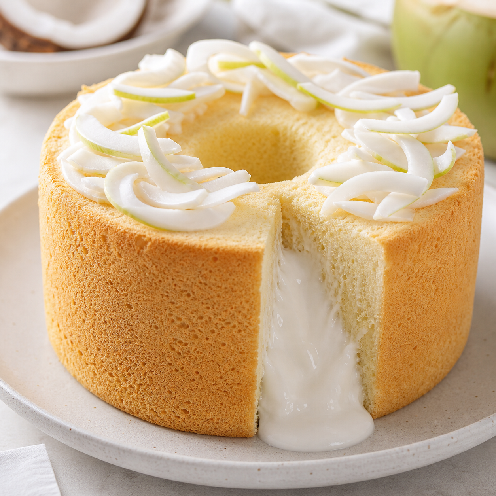
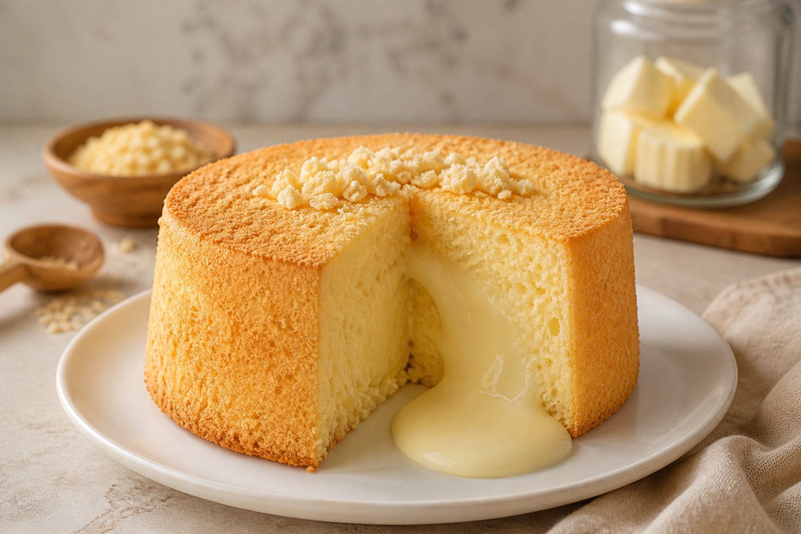
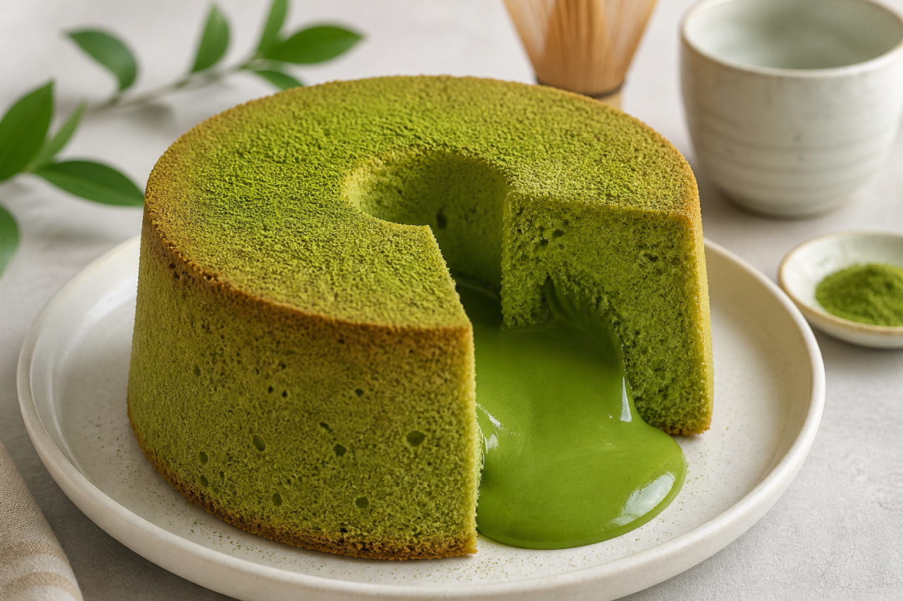

เนื้อเค้กนุ่มเบา หอมมะพร้าวอ่อน และไส้ลาวาที่ข้นกำลังดี
พร้อมปริมาณวัตถุดิบ
ขั้นตอนทำ และเคล็ดลับแก้ปัญหาที่เจอบ่อย

ชิฟฟ่อนมะพร้าวอ่อนลาวา เป็นการผสมผสานระหว่าง “ชิฟฟ่อนเค้กสไตล์ญี่ปุ่น” ที่มีเนื้อเบา นุ่มฟู กับ “วัตถุดิบไทยแท้” อย่างมะพร้าวอ่อน จนเกิดเป็นเมนูที่ทั้งหอม มัน และละมุนในแบบเฉพาะตัว
จุดเด่นของเมนูนี้คือ “ไส้ลาวา” ที่พัฒนาให้มีความเยิ้มกำลังดี ไม่เหลวจนเลอะ และไม่ข้นจนเสียความฟิน กลายเป็นเมนูยอดนิยมทั้งในร้านเบเกอรี่และตลาดออนไลน์
💡 Key Insight: เมนูนี้ได้รับความนิยมสูงเพราะ “รสชาติไทย + เทคนิคญี่ปุ่น” ทำให้เข้าถึงลูกค้าได้ง่าย และขายได้จริงในทุกช่องทาง
จากเค้กสไตล์อเมริกัน สู่เมนูยอดฮิตที่ผสมผสานวัตถุดิบไทยได้อย่างลงตัว
ชิฟฟ่อนมะพร้าวอ่อนลาวา เป็นเมนูที่ถูกพัฒนามาจาก “Chiffon Cake” ของสหรัฐอเมริกา ผสมผสานกับ “มะพร้าวน้ำหอมไทย” จนกลายเป็นเมนูยอดนิยมที่ทั้งนุ่ม หอม และมีเอกลักษณ์เฉพาะตัว
ชิฟฟ่อนเค้กถูกคิดค้นในปี ค.ศ. 1927 โดย Harry Baker ชาวอเมริกัน
จุดเด่นคือการใช้น้ำมันพืชแทนเนย ทำให้เค้กมีความ นุ่ม เบา แต่ยังชุ่มฉ่ำ สูตรนี้เคยเป็นสูตรที่ผู้คิดค้นเก็บไว้ใช้ในเชิงพาณิชย์ ก่อนจะถูกเผยแพร่ในภายหลัง
เริ่มจาก ชิฟฟ่อนมะพร้าวอ่อน ที่เป็นของฝากยอดนิยมในหลายจังหวัด
ต่อมาเมื่อเทรนด์ “ลาวา” ได้รับความนิยม จึงเกิดการนำซอสมะพร้าวมาสอดไส้ ให้เกิดเอฟเฟกต์ไหลเยิ้ม
จึงเป็นเมนูที่หลายร้านนำไปปรับรสชาติและรูปแบบให้เข้ากับลูกค้าของตัวเอง
“จากเทคนิคชิฟฟ่อนเนื้อนุ่ม
สู่เค้กมะพร้าวอ่อนที่เข้ากับรสชาติแบบไทย”
ปัจจุบันแต่ละร้านมีสูตรเฉพาะ เช่น เพิ่มความเค็มตัดหวาน หรือใช้มะพร้าวเผาเพื่อเพิ่มกลิ่นหอม
ไม่ใช่แค่อร่อย แต่เป็นเมนูที่ “ตอบโจทย์ตลาด” ทั้งรสชาติและการขาย
มะพร้าวน้ำหอมให้รสชาติหวานธรรมชาติ กินง่ายทุกวัย
ผ่าแล้วไหลเยิ้ม ถ่ายรูปสวย แชร์ง่าย
นุ่มฟู + ลาวาเนียน + มะพร้าวเคี้ยวเพลิน
ต้นทุนต่ำ ตั้งราคาขายได้สูง
หน้าร้าน / ออนไลน์ / เดลิเวอรี่
เมนูที่ทำขายได้หลายโอกาส
เหมาะกับชิ้นเดี่ยว ของฝาก และพรีออร์เดอร์
3 สูตรยอดนิยมที่ปรับปริมาณให้ทำตามได้ง่ายและต่อยอดขายได้

ชิฟฟ่อนเนื้อนุ่มกับไส้ครีมชีสเค็มอ่อนๆ หวานพอดี เหมาะทำเป็นเค้กชิ้นหรือพรีออร์เดอร์
คลิกดูสูตรชิฟฟ่อนมะพร้าวอ่อนแบบคลาสสิก ไส้ข้นหอมกะทิและน้ำมะพร้าว รสหวานมันกำลังดี
คลิกดูสูตร
เนื้อชิฟฟ่อนมัทฉะหอมชัด ไส้คัสตาร์ดชาเขียวข้นเนียน ปรับหวานได้ตามกลุ่มลูกค้า
คลิกดูสูตรสูตรพื้นฐานพร้อมปริมาณชั่งตวงจริง ปรับรสได้ตามวัตถุดิบและเตาอบของแต่ละบ้าน
สำหรับพิมพ์ปล่อง 7 นิ้ว 1 ก้อน หรือคัพเค้กประมาณ 12 ชิ้น
กวนไส้ให้เย็น ผสมส่วนไข่แดงกับแป้ง ตีไข่ขาวให้ตั้งยอดอ่อนถึงกลางแล้วตะล่อม อบ 160°C ประมาณ 35-45 นาที คว่ำพิมพ์ทันทีหลังสุก เจาะรูกลางแล้วบีบไส้
ผสมแป้งข้าวโพด น้ำมะพร้าว กะทิ น้ำตาล เกลือ คนให้ละลาย กวนไฟกลางจนข้นเหมือนคัสตาร์ด ใส่เนื้อมะพร้าวและเนย พักให้เย็นสนิทแล้วแช่เย็นให้เซ็ตตัว
ผสมไข่แดง น้ำตาล เกลือ ใส่น้ำมัน น้ำมะพร้าว และกะทิ คนให้เข้ากัน จากนั้นร่อนแป้งและผงฟูลงไป คนเบาๆ ให้เนื้อเนียนไม่มีก้อน
ตีไข่ขาวให้ตั้งยอดอ่อนถึงกลาง ปลายยอดโค้งเล็กน้อย แบ่งผสมลงในไข่แดง 3 รอบ ตะล่อมเบามือ เทลงพิมพ์ อบ 160°C นาน 35-45 นาที สุกแล้วคว่ำพิมพ์ทันที
เมื่อเค้กเย็นสนิท แกะออกจากพิมพ์ เจาะรูตรงกลาง บีบไส้ลาวาที่แช่เย็นไว้เข้าไปให้เต็ม หรือราดด้านบนให้ไหลเยิ้มตามชอบ
🥥 หอมมะพร้าวแท้: ใช้น้ำมะพร้าวสดและเนื้อจริงจะหอมที่สุด
☁️ เนื้อฟูเบา: ตีไข่ขาวถึงยอดอ่อน-กลางจะตะล่อมง่ายและลดโอกาสเนื้อหยาบ
❄️ การเก็บรักษา: เก็บในตู้เย็นได้ 1-2 วัน ก่อนทานอุ่นไส้เล็กน้อยจะไหลเยิ้มขึ้น
🍯 รสชาติ: สูตรหวานน้อย หากชอบมันเข้มข้นให้เพิ่มหัวกะทิในส่วนไส้
ชิฟฟ่อนรสนมชีสอ่อนๆ พร้อมไส้ครีมชีสเค็มหวานแบบไหลได้
ทำไส้ชีสให้เนียนแล้วแช่เย็น ผสมไข่แดงกับครีมชีสนิ่ม ร่อนแป้งลงไป ตีเมอแรงก์จนตั้งยอดอ่อนถึงกลางแล้วตะล่อม อบ 160°C นาน 35-45 นาที คว่ำพิมพ์ให้เย็นแล้วบีบไส้
ตีครีมชีสให้นุ่มเนียน ใส่น้ำตาลไอซิ่ง นม และวิปปิ้งครีม ตีจนข้นแต่ยังไหลได้ ปรุงเกลือกับน้ำเลมอนทีละน้อย แช่เย็นอย่างน้อย 30 นาที
อุ่นครีมชีสกับนมให้ละลาย ใส่ไข่แดง น้ำตาล น้ำมัน คนให้เข้ากัน ร่อนแป้งและผงฟูลงไป คนจนเนื้อเนียนละเอียด
ตีไข่ขาวจนยอดอ่อนถึงกลาง ตะล่อมกับส่วนไข่แดง อบ 160°C นาน 35-45 นาที เมื่อสุกแล้วคว่ำพิมพ์จนเย็นสนิท
เจาะรูกลางเค้ก บีบไส้ชีสลาวาให้เยิ้ม โรยผงโกโก้หรือผลไม้สดเพิ่มความสวยงาม พร้อมเสิร์ฟความฟิน
🧀 ชีสหอม: ใช้ครีมชีสแท้คุณภาพดีจะให้กลิ่นที่หอมละมุนและรสสัมผัสที่ดีที่สุด
☁️ อบไม่ยุบ: อย่าเปิดเตาอบบ่อย และรักษาอุณหภูมิต่ำให้สม่ำเสมอ เค้กจะฟูสวย
🌋 ลาวาไหลดี: หากไส้ข้นไปเติมนมครั้งละ 1 ช้อนโต๊ะ ถ้าเหลวไปให้ตีเพิ่มหรือแช่เย็นจนครีมอยู่ตัว
❄️ อุ่นร้อน: ก่อนทานอุ่นไมโครเวฟ 5-10 วินาที จะช่วยให้ไส้ลาวาเยิ้มและเค้กนุ่มขึ้น
เนื้อชิฟฟ่อนมัทฉะนุ่มเบา พร้อมไส้คัสตาร์ดชาเขียวข้นเนียน
นมสด 300ก., ไข่แดง 2 ฟอง, น้ำตาล 45ก., แป้งข้าวโพด 24ก., มัทฉะ 8ก., เนย 15ก.
ไวท์ช็อก 90ก., เนย 30ก., วิปครีม 80ก., ผงมัทฉะ 6ก. เหมาะกับเค้กที่เสิร์ฟทันที
วิปครีมมัทฉะ, ผงมัทฉะสำหรับโรยหน้า, ถั่วแดงกวนหยาบ หรือผลไม้สดตามชอบ
แบบคัสตาร์ด: ละลายมัทฉะกับนมอุ่น ผสมไข่แดง น้ำตาล แป้งข้าวโพด กวนไฟกลางจนข้น ใส่เนย พักให้เย็น แบบไวท์ช็อก: ละลายส่วนผสมทั้งหมดรวมกัน แช่เย็นให้เซ็ตตัว
ผสมไข่แดง น้ำตาล เกลือ น้ำมัน และนมสด ร่อนแป้งเค้ก มัทฉะ และผงฟูลงไป คนเบาๆ จนเนียน (หากมัทฉะจับตัวเป็นก้อน ให้ละลายในของเหลวร้อนก่อน)
ตีไข่ขาวกับครีมออฟทาร์ทาร์จนฟู ทยอยใส่น้ำตาล ตีจนตั้งยอดอ่อนถึงกลาง แบ่งตะล่อมกับส่วนไข่แดง 3 รอบ เทลงพิมพ์ อบ 160°C นาน 35-45 นาที สุกแล้วคว่ำพิมพ์ทันที
เมื่อเค้กเย็น แกะออก เจาะรูตรงกลางหรือบีบไส้ลาวาที่เตรียมไว้เข้าไปให้เยิ้ม โรยผงมัทฉะปิดท้ายให้สวยงาม
🍵 มัทฉะคุณภาพ: เลือกเกรดเบเกอรี่สีเขียวสดจะช่วยให้เค้กสีสวยและไม่ขมโดด
☁️ เนื้อนุ่มฟู: ต้องตีไข่ขาวให้ตั้งยอดแข็งและตะล่อมผสมอย่างเบามือเพื่อรักษาความฟู
🌋 ลาวาเยิ้ม: ไส้ต้องไม่ข้นจนเกินไป หากแช่เย็นแล้วข้นมากให้อุ่นไมโครเวฟ 5-10 วินาทีก่อนเสิร์ฟ
🫘 รสชาติ: มัทฉะจะเข้ากันได้ดีมากกับถั่วแดงกวน สามารถเพิ่มลงไปในไส้หรือตกแต่งข้างเค้กได้
นุ่มฟู ไส้ลาวาเยิ้ม อยู่กลาง ไม่จม ไม่ปลิ้น หน้าเด้งสวย
กดหัวข้อเพื่อดูวิธีแก้แบบละเอียด เพื่อให้เค้กของคุณออกมาสมบูรณ์แบบที่สุด
ใช้อุณหภูมิ 175°C ในช่วง 10 นาทีแรก และลดเหลือ 160°C จนสุก + เมื่อออกจากเตาให้กระแทกพิมพ์ 1 ครั้งเพื่อไล่อากาศร้อน และคว่ำบนตะแกรงทันทีจนเย็นสนิท
ต้องแช่ไส้ลาวาในตู้เย็นอย่างน้อย 2 ชม. จนเซ็ตตัวแข็ง + ก่อนหยอดไส้ลงในชั้นเค้ก ให้โรยแป้งเค้กบางๆ รอบๆ บริเวณที่จะวางไส้ เพื่อทำหน้าที่เป็น "เขื่อน" ล็อคความชื้นไม่ให้ซึมออกด้านข้าง
เลือกใช้แป้งเค้กญี่ปุ่นหรือแป้งคัดเกรดพิเศษ + หยุดตีทันทีที่เห็นไข่ตั้งยอดแข็งแต่ยังคงความเงา + ใช้ไม้จิ้มฟันเช็คความสุกทันทีเมื่อครบเวลา
ตรวจสอบไฟบน-ล่างให้สมดุล หากหน้าเค้กเริ่มเหลืองเร็วเกินไป ให้ใช้ถาดอบอีกใบหรือกระดาษฟอยล์วางบังไฟด้านบนในช่วง 10-15 นาทีสุดท้ายของการอบ
หากไส้ "เหลวเกิน" ให้เพิ่มแป้งข้าวโพด 1 ช้อนโต๊ะ หรือกวนให้นานขึ้นอีก 1 นาที
หากไส้ "ข้นเกิน" ให้เพิ่มน้ำมะพร้าวอ่อนครั้งละ 10 มล. จนกว่าจะได้ความหนืดที่ต้องการ (จำไว้ว่าไส้จะข้นขึ้นอีกเมื่อเย็นลง)
ภาพประกอบเมนูหลัก ช่วยให้เห็นเนื้อเค้กและระดับความข้นของไส้ลาวาได้ชัดเจน
ไส้เยิ้ม หอมมัน
เค็มหวานพอดี
หอมชาเขียว
ไส้เยิ้ม หอมมัน
เค็มหวานพอดี
ไส้เยิ้ม หอมมัน
เค็มหวานพอดี
หอมชาเขียว
ไส้เยิ้ม หอมมัน
เก็บอย่างถูกวิธี เพื่อให้เค้กนุ่มฟู ไส้ลาวายังคงความอร่อยเหมือนทำใหม่
เหมาะสำหรับทานภายในวันเดียว
วิธีที่ดีที่สุดสำหรับยืดอายุ
สำหรับเก็บระยะยาว
❌ ไม่ควรเปิดกล่องบ่อย เพราะจะทำให้เค้กแห้งเร็ว
ดาวน์โหลดสูตรฉบับเต็มพร้อมตารางคำนวณต้นทุน (Excel) ไปใช้ได้ฟรี เพื่อก้าวแรกสู่การมีรายได้เสริม